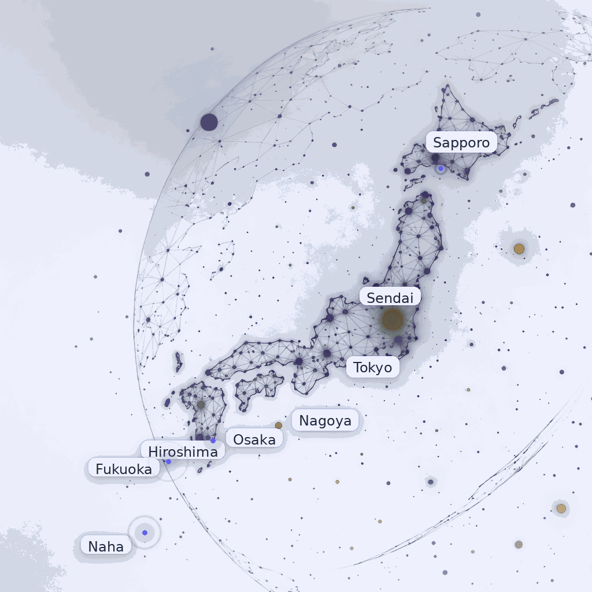

Lead with a stronger story
The homepage should immediately tell buyers that Thinkers GK is the calm, reliable operator for IT support, projects, and disposal in Japan.
Immersive design direction
If you had asked me to design Thinkers GK with a more ambitious creative bar, I would build a cinematic experience around speed, control, and field execution in Japan. Bigger visuals, stronger interactions, bolder typography, and buyer journeys that naturally move toward contact.
Animated network surface showing how the brand could visually communicate control across Japan.
Dark editorial styling, layered glass panels, and motion that feels deliberate.
Design strategy
The homepage should immediately tell buyers that Thinkers GK is the calm, reliable operator for IT support, projects, and disposal in Japan.
More photography, animated map moments, short service reel sections, and polished transitions between content blocks.
Dedicated entry paths for urgent support, office closures, projects, and subcontractor partnerships instead of one generic CTA.
A more distinct visual system with premium typography, depth, contrast, and motion helps the company feel bigger and more established.
Interactive sample
A professional redesign should not just look good. It should respond to what the visitor needs and change the message, imagery, and CTA accordingly.
For support buyers
The page would immediately show response model, service desk options, and who this is ideal for, with a more urgent CTA path.

For disposal projects
This path would feel operational and trustworthy, with collection steps, compliance notes, and clearer commercial triggers.
For channel and global teams
This is where I would speak directly to overflow work, field engineering, office projects, and white-label delivery support.

Video and motion
I would use lightweight loops or short silent service reels to show field engineers, office moves, hardware collection, and command-center style operations visuals. Enough to feel premium, not enough to feel heavy.

Case study direction
Timeline-led storytelling with photos, disposal reporting, and a clearer explanation of how the project was handled.
Support-first story showing communication clarity, faster issue handling, and stronger local execution.
Project rollout case with milestones, site count, service scope, and operational result.
My recommendation
That means one premium homepage, conversion-focused service pages, stronger disposal SEO pages, better photography treatment, embedded motion, and clearer lead capture paths for support, disposal, and partner work.